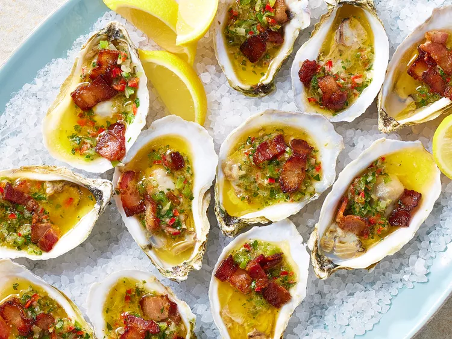

Oysters Casino
Home

Description
Oysters casino are a wonderfully decadent appetizer. Serve with a mignonette and a simple salad.
ingredients
- 3 slices thick-cut bacon, cut crosswise into 1/2-inch pieces
- 1 shallot, finely chopped
- 1 small green bell pepper, finely chopped
- 2 tablespoons seeded and finely chopped red Fresno chile
cooking steps
- Gather all ingredients.
- Preheat oven to 450 degrees F (230 degrees C), and line 2 rimmed baking sheets with aluminum foil. Crumble another layer of foil on each baking sheet, forming a total of 24 small cups to place the oysters on to prevent them from tipping over.
- Place bacon in a large nonstick skillet, and cook over medium, stirring occasionally, until bacon is starting to brown but not quite crisp, about 5 minutes. Transfer bacon to a paper towel-lined plate, reserving 1 tablespoon drippings in skillet.